홈>
PR센터>
선박기초상식
선박기초상식
선박에 대한 기초정보를 모아놨습니다.
선박의 원리
-
- 배가 뜨는 원리
- 무거운 철판들로 만든 배가 어떻게 가라앉지 않고 뜰 수 있을까요? 바로 부력의 원리 때문입니다. 고대 그리스의 학자였던 아르키메데스가 왕관이 순금으로 만들어진 것인가를 알아내라는 왕의 명령에 따라 며칠을 고심하다가 욕조에 들어가던 중 물이 넘치는 것을 보고 부력의 원리를 발견했다고 전해집니다. 물체를 물 속에 넣으면 그 물체와 같은 부피의 물의 무게만큼 가벼워진다는 게 부력의 원리입니다.
- 배가 물에 뜨는 원리도 이와 동일합니다. 부력의 크기는 그 물체가 밀어낸 물의 무게와 같으며 물체가 물에 잠긴 부분의 중심, 즉 부심을 통해 중력과 반대 방향으로 작용합니다. 부력은 물 속에 잠긴 물체의 무게만큼 발생하지만 물체가 물에 닿는 면적이 넓을수록 잘 뜰 수 있습니다.
- 만약 물체의 무게가 같은 부피의 물 무게보다 작으면 그 물체는 가라앉지 않는데, 이는 부력이 물체의 무게보다 크기 때문입니다. 이 원리를 이용하여 배가 밀어내는 물의 무게보다 배의 무게를 더 가볍게 만들면 배는 물에 뜰 수 있습니다.
-
- 배가 움직이는 원리
- 배를 움직이려면 압축공기를 엔진 내의 실린더에 직접 공급해 시동을 겁니다.
- 시동이 걸리면 프로펠러의 날개가 회전하면서 물을 뒤로 밀어내고, 그 반작용으로 배는 앞으로 나아갑니다.
- 이는 선풍기의 바람과 같은 원리로, 동일한 구조를 가진 배의 프로펠러도 빨리 회전할수록 많은 양의 물을 배 뒤로 밀어내어 앞으로 추진력을 강하게 만들 수 있습니다.
- 엔진을 작동시킨 상태에서는 역회전시키는 일이 쉽지 않으며, 만약 반대방향으로 돌려야 한다면 일단 엔진을 정지시킨 다음 역회전시켜 회전방향을 반대로 해야 합니다.
-
조선 용어
용어 영문 설명 선행의장 Pre-Outfitting 조립 완료된 블록(block) 내·외부에 각종 파이프나 전선, 기기류를 설치 블록도장 Block Painting 조립과 선행의장이 완료된 블록의 강재 표면에 붙은 이물질(녹, 기름)을 제거하고, 도장 P.E Pre Erection 도장이 완료된 블록을 도크 주위의 크레인 능력에 맞게 2~3개씩 모아 블록 크기를 키움 탑재 Erection 대형화된 블록을 도크에 내려 블록 이음부를 용접하여 선박의 형태를 만듬 선체도장 Hull Painting 탑재공정에서 생긴 이음부에 붙은 이물질을 제거하고 강재표면을 도장(선박도장의 마무리) 시운전 Sea Trial 계약서상에 합의된 선박의 성능에 대해 실제 해상에서 시험(속력, 연료소모량 등) 명명식 Naming Ceremony 건조 완료된 선박에 이름을 붙이는 행사 인도 Delivery 계약서상에 합의된 성능을 가진 선박을 선주에게 인도 노트 knot 선박의 속도를 나타내는 단위이며 1노트는 1시간에 1해리(1,852m)를 가는 속도
톤수의 분류
선박의 크기를 표현하는데 톤수(Tonnaqe)가 사용되며 중량의 단위 및 용적의 개념으로도 사용하고 있습니다.
용도에 따라 배의 용적을 나타내는 총톤수 및 순톤수, 배가 적재할 수 있는 화물의 중량을 나타내는 재화중량톤수, 배의 중량을 나타내는 배수량톤수, 선박의 종류별 가공공수에 의한 상대적 지표인 표준화물선 환산톤수가 주로 사용됩니다.
-
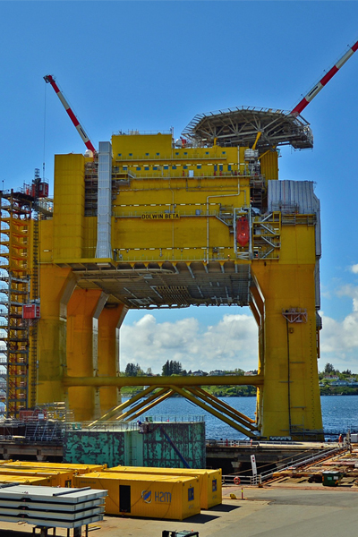
총톤수와 순톤수
총톤수(GT)와 순톤수(NT)는 선박의 공식 톤수로 정부에 선박을 등록 하거나 세금 및 각종 요금의 징수 기준이 되는 톤수로 법정 톤수라고 할 수 있습니다.
- 총톤수(GT)
- 선박의 전체용적을 100큐빅피트로 나눈 톤수
- 순톤수(GT)
- 선박의 전체용적에서 선박 운항에 이용되는 부분(기관실, 선원실, 밸러스트 탱크 등)을 공제한 용적을 100큐빅피트로 나눈 톤수로 직접영업행위에 사용되는 면적을 의미합니다. 항세.톤세.운하 통과료.등대 사용료.항만시설 사용료 등의 기준이 됩니다. 보통 총톤수의 약 0.65배에 해당합니다.
- 총톤수(GT)와 순톤수(NT)가 용적의 단위인 이유
- 톤수 개념이 도입될 당시 해상운송 대상 화물 중 가장 중요한 화물은 포도주로, 참나무통에 담아 운반했습니다. 이에 선박이 포도주통을 몇 개나 적재할 수 있는가에 따라 선박 크기를 책정해 세금을 부과했습니다. 이 때 그 선박의 적재 중량이 아닌 화물을 적재할 수 있는 공간의 용적에 의해 결정되며, 이것이 선박의 공식 톤수가 중량 단위가 아닌 용적 단위로 정착한 유래입니다.
-
재화중량과 배수량톤수
- 재화중량톤수
- 선박이 적재할 수 있는 화물의 중량으로 최대적재량을 의미. 선원, 연료, 밸러스트, 식량, 선용품 등 일체가 포함된 무게로 실제 수송할 수 있는 화물의 톤수는 재화중량 톤수로부터 이들 각 중량을 차감한 수치입니다.
- 배수량톤수
- 선박이 밀어내는 물의 중량으로, 물위에 떠 있는 선박의 수면하 부피와 동일한 물의 중량 화물을 적재하지 않은 상태에서의 배수량을 경화배수톤, 화물을 만재홀수선까지 적재했을 때 선박이 밀어내는 배수량을 재화배수톤이라고 합니다.
- 통상 재화배수톤은 군함의 크기를 나타내는데 쓰이며, 경화배수톤은 선박 해체시 고철이 얼마나 나올 것인가를 추산하는 근거로 사용합니다.
선박 건조 과정
-
- 설계
- 선주가 요구하는 사양에 맞춰 컴퓨터로 설계 도면을 그립니다.
-
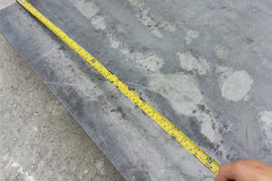
- 강재적치
- 생산제품별로 강재를 적치합니다.
-
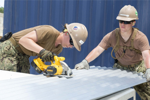
- 강재절단
- 설계 도면에 따라 강재를 절단합니다.
-
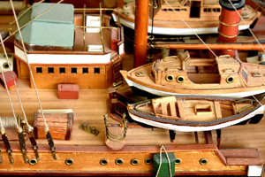
- 조립
- 절단된 강재들을 용접하여 선박의 일부분을 만듭니다.
-
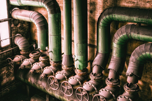
- 의장
- 선박의 일부분인 블록에 파이프나 배선 등의 의장작업을 합니다.
-
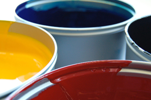
- 도장
- 배에 녹이 슬지 않도록 친환경적 제품으로 페인트 작업을 합니다.
-
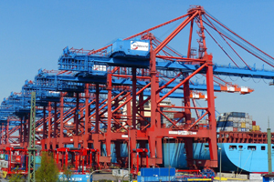
- 탑재
- 완성된 블록을 도크로 옮겨 탑재하여 선박의 모양을 갖춥니다.
-
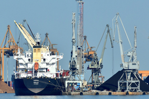
- 진수
- 도크에 물을 채워 완성된 선박을 바다로 띄웁니다.
-
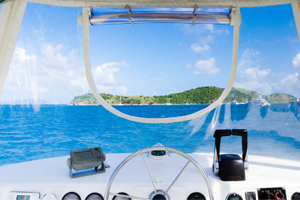
- 안벽작업
- 진수된 선박을 안벽에서 선실의 인테리어 및 각종 장비를 설치하고 테스트를 하여 마무리 작업을 합니다.
-
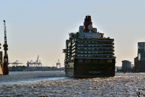
- 시운전
- 도크에 물을 채워 완성된 선박을 바다로 띄웁니다.
-
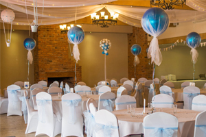
- 명명식
- 선주가 직접 방문하여 완성된 선박의 이름을 부여하는 행사를 합니다.